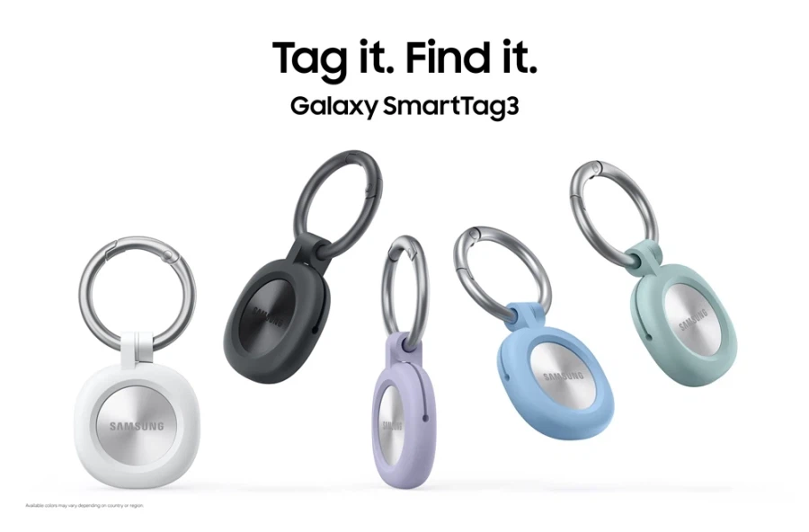
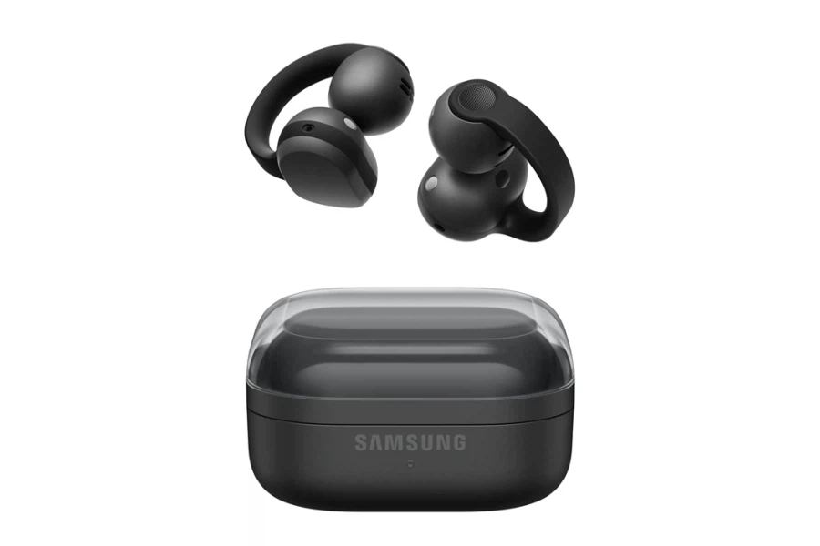
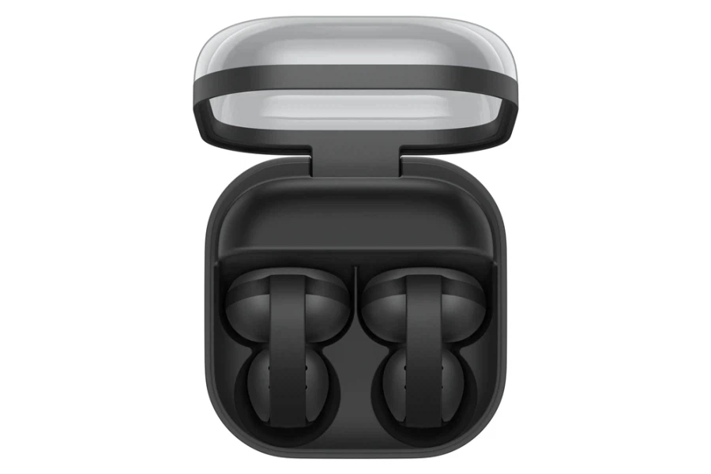

스마트태그 3는 ios에서도 사용가능
갤럭시s 노말들은 UWB없어서 태그시리즈 제대로 못 씀



스마트태그 3는 ios에서도 사용가능
갤럭시s 노말들은 UWB없어서 태그시리즈 제대로 못 씀
저 클립형 이어폰은 어떻게..? 끼는거야...? 약간 옛날 여자애들 귀찌 느낌으로 거는..건가...? 30대남이 끼기엔 좀 부담스러울거같은데...
골전도 다음형으로 여기저기서 많이 나옴
어른남자도 많이 끼더라
ㅋㅋㅋㅋㅋㅋㅋㅋㅋㅋㅋㅋㅋㅋㅋㅋㅋㅋㅋㅋㅋㅋ나도 늙나보다... 어린이용 귀찌같다는 생각밖에 안들어 ㅋㅋㅋ
오히려 나이 있는분들한테 인기 많은 제품임 젊은 애들은 잘 안씀 ㅋㅋㅋ
이런거 가지고도 나이 갈라치기냐?
나이대별 선호도가 다른거지 니는 회사에서 고객 나이대별 니즈 찾으면 갈라치기라 할거임?
뒈져 그냥
기존 이어폰으로 귀가 막혀 중이염같은 질병이 빈번하거나, 주변 소음을 들어야한다면 좋음
ㄹㅇ 걍 조깅할때 안빠져서 좋더라
나 이거 쓰는데
제일 큰 이유가 밀폐형 쓰면 귀에 염증같은게 생겨서 간지럽고 진물같은게 남.
이거 쓰고 한번도 그런적이 없음
주변 소음 같이 들려서 좀 별로긴한데
못들어서 위험할일도 없으니 그러려니 하고 있음
주변 소리도 같이 들어야하는 나 같은 버스기사한테는 좋네
ㄹㅇ 나도 인이어 쓸때 귀지도 기름처럼 바뀌고 염증생겨서 개지랄 나서 병원도 자주 갔었는데 골전도로 바꾸자마자 바로 좋아져서 이젠 골전도 아니면 안쓰는 수준... 산책할때 주변 소음도 잘 들려서 사고위험도 적고.
다만 주변에 소리가 좀 울려서 조용한데서는 쓰기 힘들겠더라.
운동하는 사람들이 많이써
클립형 이어폰 베이시어스꺼랑 비슷한데...회색점 물리버튼같아보이고
갑자기 왜 또 에어태그 닮아가냐?
선출시 후카피
스마트태그 기존 디자인이 괜찮았는데 왜 갑자기 또 에어태그 파쿠리하냐
샥즈거 괜찮던데 비슷한 모양 비슷하넹
샥즈는 넘 잘 빠지더라
난 태그 기능 있는 이어폰 나오면 좋겠음 ㅋㅋ 맨날 찾아해매는게 일...
유닛에?
충전케이스에
에어팟들은 있지 않나 위치찾기 되던데
에어팟들은 태그 기능 기본적으로 될텐데
버즈는 그게 안 돼?
이어폰 케이스에 달린 고리나 카라비너에 태그 달아쓰긴 함
버즈 되는데
핏4 기다리는 사람 많던데 그거나 내주지
골전도이어폰은 주변에 소음이 크면 그 소리에 묻혀서 음악이 잘 안들리더라 그래서 볼륨을 높이면 또 진동이 너무 쌔서 골이 울리고
골이따분할 때 쓰면 좋긴 함
태그는 결국 에어태그 형태로 수렴하네
그래서 테그가 뭔덴뭔데
위치추적 악세사리
핏4는 뒤진거니
태그 uwb 옶으니깐 좀 애매하
애미디진거 큰게싫다고 돈이없는게아니라 왜 옵션장난질하냐고
핏4는 언제 나오냐
스마트태그2 한달전에 샀는데!!!!!!!! 크아아악
UWB 가 뭐시요
스마트태그2도 갤s25 노말에는 못 쓴다는거야?
쓸 수 있는 건줄 알았네
s26노말도 못씀 ㅋㅋ
쓸수야 있는데 정밀하게 찾는건 안 됨
와 클립형 이어폰 사고싶었는데 언제나온다냐
갤럭시 온 15만원쯤 까지 가격 떨어지면 살만할것 같은데
요즘 저런 오픈형, 골전도 형태 이어폰들도 어느정도 노캔이 되더라. 엄청 신기하던데 원리가 뭐지.
핏 4는?